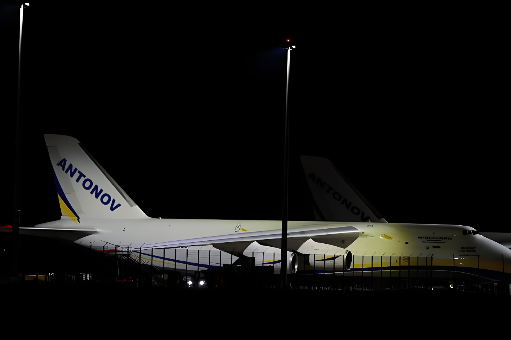

Le 1er septembre 2026, le gouvernement allemand a formellement désigné la Russie comme responsable de l'attaque au drone piégé survenue début août à l'aéroport de Leipzig/Halle, plaque tournante du soutien logistique à l'Ukraine. Berlin annonce dans la foulée la fermeture d'un consulat russe et une série de mesures de rétorsion, tandis que Moscou dément et dénonce une manipulation.
Dans la nuit du 4 au 5 août 2026, un drone quadricoptère de type FPV, de la taille d'un four à micro-ondes et chargé d'environ 800 grammes d'explosif PETN (pentrite), est découvert sur le tarmac de l'aéroport de Leipzig/Halle, en Saxe, à proximité d'un avion-cargo Antonov ukrainien venu de France avec une cargaison de munitions destinée au front est-européen. L'engin est neutralisé par les artificiers de la police avant d'exploser.
L'incident entraîne la fermeture temporaire de l'aéroport. Dans la confusion qui suit, un second drone percute un Boeing 757 contraint de remettre les gaz après une tentative d'atterrissage. Dans les jours et semaines suivantes, deux autres engins suspects sont retrouvés aux abords du site, confirmant l'ampleur inhabituelle de l'opération.
L'aéroport de Leipzig/Halle n'a pas été choisi au hasard : il héberge la mission « Strategic Airlift International Solution » (SALIS) de l'OTAN, qui achemine quasi quotidiennement armements et équipements militaires vers les pays du flanc oriental de l'Alliance, de la Finlande à la Roumanie, ainsi que vers l'Ukraine, via des compagnies cargo ukrainiennes. Un précédent avait déjà visé ce site en 2024, lorsqu'un engin incendiaire avait mis le feu à un conteneur de fret dans un centre logistique, dans une affaire que les services de sécurité occidentaux soupçonnent également d'être d'origine russe.
Découverte du drone piégé près d'un cargo ukrainien ; un second drone percute un avion contraint de remettre les gaz. L'aéroport ferme temporairement.
Deux autres drones suspects sont retrouvés aux abords du site dans les jours et semaines qui suivent.
Le gouvernement allemand approuve un renforcement des pouvoirs de ses services de renseignement face aux actes de sabotage.
Dobrindt et Wadephul attribuent officiellement l'attaque à la Russie et annoncent des mesures de rétorsion.
La Süddeutsche Zeitung, la NDR et la WDR révèlent l'identification par ADN de deux suspects liés aux services russes.
Après près d'un mois d'enquête, les ministres allemands de l'Intérieur, Alexander Dobrindt, et des Affaires étrangères, Johann Wadephul, ont annoncé conjointement que la responsabilité russe était établie. Dobrindt a expliqué que la configuration du drone, ses composants, l'explosif et le détonateur présentaient des similitudes avec d'autres opérations hybrides russes, révélant selon lui « un haut niveau d'expertise technique » associé à l'exécution par des agents dits « jetables », agissant pour le compte d'entités étatiques russes.
Le lendemain, 2 septembre, trois médias allemands de référence — Süddeutsche Zeitung, NDR et WDR — ont révélé, sur la base de traces ADN relevées sur les lieux, l'identification de deux suspects : un ressortissant biélorusse muni d'un passeport russe, entré dans l'espace Schengen avec un visa touristique délivré à Minsk, et un second homme né en Russie et détenteur d'un passeport letton, présenté comme le logisticien et instructeur de l'opération, arrivé fin juillet par l'aéroport de Berlin avant de quitter le pays deux jours avant l'attaque.
| Mesure annoncée par Berlin | Portée |
|---|---|
| Diplomatie | Ambassadeur russe convoqué |
| Consulaire | Fermeture du consulat de Bonn (18 sept. 2026) |
| Culturel | Fermeture de la Maison russe à Berlin |
| Sanctions UE | Ajout de ressortissants russes sur les listes |
| Contrôles | Durcissement de l'entrée des ressortissants russes |
| Économique | Pression accrue sur la « flotte fantôme » pétrolière |
« L'enquête policière, le mode opératoire observé et les éléments de renseignement établissent ensemble la responsabilité russe dans la tentative d'attentat de Leipzig. »
— Alexander Dobrindt, ministre allemand de l'Intérieur, 1er septembre 2026La solidarité européenne et transatlantique s'est manifestée rapidement : le secrétaire général de l'OTAN, Mark Rutte, a affirmé que l'Alliance se tenait « en pleine solidarité avec l'Allemagne » après cette « attaque hybride russe ». L'affaire s'inscrit dans une séquence plus large de sabotages attribués à Moscou en Europe — l'agence Associated Press en a recensé environ 200 depuis le début de l'invasion de l'Ukraine — dont un incendie quasi simultané chez le fabricant polonais de drones WB Electronics, revendiqué par le Premier ministre Donald Tusk comme un nouvel acte de sabotage visant son pays.
Au-delà du cas de Leipzig, cette attribution marque un point de bascule dans la doctrine allemande : pour la première fois depuis le début de la guerre en Ukraine, Berlin nomme directement l'État russe comme auteur d'une tentative d'attentat sur son sol, plutôt que de se contenter d'évoquer des « acteurs proches de la Russie ». La stratégie de Moscou — recourir à des exécutants jetables et à un déni plausible pour tester la détermination européenne sans franchir le seuil d'un acte de guerre ouvert — place les gouvernements occidentaux devant un dilemme classique de la dissuasion : répondre trop faiblement invite à la répétition, répondre trop fort risque l'escalade. En choisissant des mesures diplomatiques et consulaires ciblées plutôt que des représailles spectaculaires, l'Allemagne cherche un équilibre précaire, dont l'issue dépendra largement de la capacité de l'Europe à agir de façon coordonnée face à une pression qui, de la Baltique à la Pologne, ne montre aucun signe de retrait.
Am 1. September 2026 hat die deutsche Bundesregierung Russland offiziell für den Sprengstoffdrohnen-Angriff Anfang August am Flughafen Leipzig/Halle verantwortlich gemacht — einem zentralen logistischen Drehkreuz für die Unterstützung der Ukraine. Berlin kündigte umgehend die Schließung eines russischen Konsulats sowie eine Reihe von Vergeltungsmaßnahmen an, während Moskau die Vorwürfe zurückweist und von einer Manipulation spricht.
In der Nacht vom 4. auf den 5. August 2026 wurde eine FPV-Quadrocopter-Drohne von der Größe eines Mikrowellenherds, beladen mit rund 800 Gramm des Sprengstoffs PETN, auf dem Vorfeld des Flughafens Leipzig/Halle in Sachsen entdeckt — in unmittelbarer Nähe eines ukrainischen Antonov-Frachtflugzeugs, das mit Munition aus Frankreich kommend für die Ostfront bestimmt war. Der Sprengsatz wurde vom Kampfmittelräumdienst der Polizei entschärft, bevor er detonieren konnte.
Der Vorfall führte zur vorübergehenden Schließung des Flughafens. In der darauffolgenden Verwirrung kollidierte eine zweite Drohne mit einer Boeing 757, die nach einem Landeversuch durchstarten musste. In den folgenden Tagen und Wochen wurden zwei weitere verdächtige Objekte in der Umgebung des Flughafens gefunden, was das ungewöhnliche Ausmaß der Operation bestätigte.
Der Flughafen Leipzig/Halle wurde nicht zufällig gewählt: Er beherbergt die NATO-Mission „Strategic Airlift International Solution" (SALIS), die nahezu täglich Rüstungsgüter und militärische Ausrüstung an die östlichen Bündnisstaaten von Finnland bis Rumänien sowie an die Ukraine liefert, über ukrainische Frachtfluggesellschaften. Bereits 2024 war der Standort Ziel eines Vorfalls, als ein Brandsatz einen Frachtcontainer in einem Logistikzentrum in Brand setzte — ein Fall, den westliche Sicherheitsbehörden ebenfalls russischen Geheimdiensten zuschreiben.
Entdeckung der Sprengdrohne nahe einem ukrainischen Frachtflugzeug; eine zweite Drohne kollidiert mit einem durchstartenden Flugzeug. Der Flughafen wird vorübergehend geschlossen.
In den folgenden Tagen und Wochen werden zwei weitere verdächtige Drohnen in der Umgebung des Flughafens entdeckt.
Das Bundeskabinett billigt erweiterte Befugnisse für die Nachrichtendienste im Kampf gegen Sabotage.
Dobrindt und Wadephul machen offiziell Russland verantwortlich und kündigen Vergeltungsmaßnahmen an.
Süddeutsche Zeitung, NDR und WDR berichten über die DNA-Identifizierung zweier Verdächtiger mit Verbindungen zu russischen Diensten.
Nach knapp einem Monat Ermittlungen erklärten Bundesinnenminister Alexander Dobrindt und Außenminister Johann Wadephul gemeinsam, dass die russische Verantwortung erwiesen sei. Dobrindt führte aus, dass Konfiguration, Bauteile, Sprengstoff und Zünder der Drohne Parallelen zu anderen russischen Hybridoperationen aufwiesen — ein Befund, der auf „ein hohes Maß an technischer Expertise" hindeute, wobei die Ausführung sogenannten „Wegwerf-Agenten" überlassen worden sei, die im Auftrag russischer Staatsstellen handelten.
Am folgenden Tag, dem 2. September, berichteten drei führende deutsche Medien — Süddeutsche Zeitung, NDR und WDR — auf Basis von DNA-Spuren am Tatort über die Identifizierung zweier Verdächtiger: ein belarussischer Staatsangehöriger mit russischem Pass, eingereist mit einem in Minsk ausgestellten Touristenvisum, sowie ein zweiter, in Russland geborener Mann mit lettischem Pass, der als Logistiker und Ausbilder der Operation gilt. Er war Ende Juli über den Flughafen Berlin eingereist und verließ Deutschland zwei Tage vor dem Anschlag.
| Von Berlin angekündigte Maßnahme | Umfang |
|---|---|
| Diplomatie | Russischer Botschafter einbestellt |
| Konsularisch | Schließung des Konsulats Bonn (18. Sept. 2026) |
| Kulturell | Schließung des Russischen Hauses in Berlin |
| EU-Sanktionen | Aufnahme russischer Bürger auf Sanktionslisten |
| Kontrollen | Verschärfte Einreisekontrollen für Russen |
| Wirtschaftlich | Erhöhter Druck auf die russische „Schattenflotte" |
„Die polizeilichen Ermittlungen, das beobachtete Vorgehen und die Erkenntnisse der Nachrichtendienste belegen zusammen die russische Verantwortung für den Anschlagsversuch in Leipzig."
— Alexander Dobrindt, Bundesinnenminister, 1. September 2026Die europäische und transatlantische Solidarität zeigte sich rasch: NATO-Generalsekretär Mark Rutte erklärte, die Allianz stehe „in voller Solidarität mit Deutschland" nach diesem „russischen Hybridangriff". Der Fall reiht sich in eine längere Serie von Russland zugeschriebenen Sabotageakten in Europa ein — die Nachrichtenagentur AP zählte seit Kriegsbeginn rund 200 solcher Vorfälle —, darunter ein nahezu zeitgleicher Brand beim polnischen Drohnenhersteller WB Electronics, den Ministerpräsident Donald Tusk als weiteren Sabotageakt gegen sein Land bezeichnete.
Über den Fall Leipzig hinaus markiert diese Zuschreibung einen Wendepunkt in der deutschen Haltung: Erstmals seit Beginn des Ukraine-Kriegs benennt Berlin den russischen Staat direkt als Urheber eines Anschlagsversuchs auf deutschem Boden, statt lediglich von „russlandnahen Akteuren" zu sprechen. Moskaus Strategie — der Einsatz entbehrlicher Ausführender und glaubhafter Abstreitbarkeit, um die europäische Entschlossenheit zu testen, ohne die Schwelle eines offenen Kriegsakts zu überschreiten — stellt westliche Regierungen vor ein klassisches Abschreckungsdilemma: Eine zu schwache Reaktion lädt zur Wiederholung ein, eine zu harte birgt Eskalationsrisiken. Mit gezielten diplomatischen und konsularischen Maßnahmen statt spektakulärer Vergeltung sucht Deutschland eine prekäre Balance, deren Ausgang maßgeblich davon abhängen wird, ob Europa dem anhaltenden Druck von der Ostsee bis nach Polen koordiniert begegnen kann.